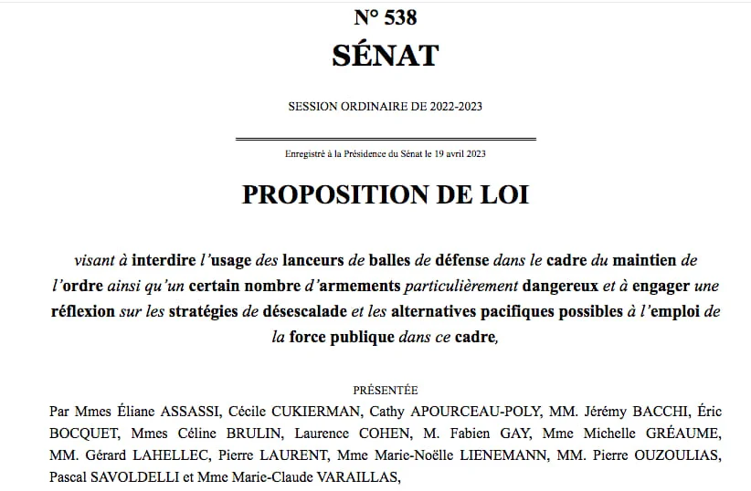

Publication d’archives
Interdiction LBD et autres armements dangereux
Date indiquée par Facebook · 20 avril 2023
Texte conservé avec la publication
Contexte du dossier
Un lien mis à jour le 26 mars signale la première synthèse LDH sur Sainte-Soline, sans en reproduire les conclusions. L’appel de L’Humanité relayé le 12 avril défend ensuite l’association contre les menaces de Darmanin sur ses subventions : il rappelle son histoire depuis Dreyfus et son rôle d’observation indépendante. Le 20 avril, les sénateurs CRCE proposent d’interdire LBD et autres armes dangereuses pour favoriser la désescalade. Le 3 mai, une publication rapporte les critiques formulées lors de l’examen des droits humains en France à l’ONU : force disproportionnée, arrestations et blessures graves, avec demande de formation. Il s’agit du compte rendu militant de cet examen ; l’archive ne contient pas ici son relevé diplomatique intégral.

Sources
Archive rouge · export Facebook · AR-0002-FB-01680
À lire aussi · Avril 2024 : Pierre Barros répond aux restrictions de grève